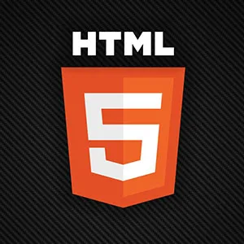
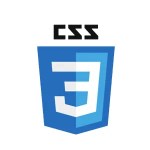
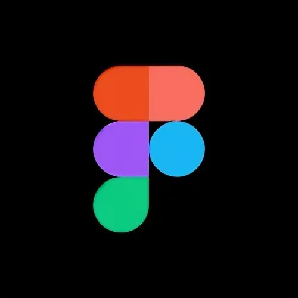
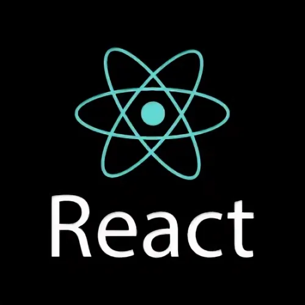
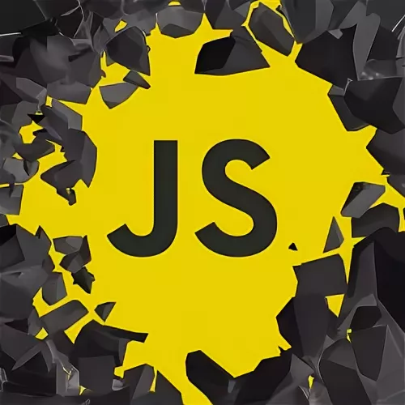

HTML haqida batafsil
15 oct 2022
|
FrontEnd, HTML
Internetning WWW hizmati, asosan, wyeb-sahifalarga bog‘liq ekan,
ular qanday yaratiladi? – degan savol tug‘ulishi tabiiy. Wyeb-sahifalar HTML
(Hypertext Markup Language – Gipermatnli markerlash tili) tilida yoziladi.
HTML – dasturlash tili hisoblanmaydi. Bu tilda hujjat (wyeb-sahifa)
tayyorlash uchun Windows’ning Bloknot kabi oddiy matn muharriri yetarli.
HTML tilining buyruqlari “<” ва “>” belgilari orasiga yoziladi va deskriptor
yoki teg (inglizcha tag – yorliq, belgi, alomat) deb ataladi.

CSS haqida batafsil
15 oct 2022
|
FrontEnd, CSS
CSS veb-sahifaning tashqi ko’rinishiga ishlov beradi.
CSS dan foydalanib, siz matnning rangini, shriftlarning uslubini,
paragraflar orasidagi bo’shliqni, ustunlarning o’lchamlari va joylashishini,
fon rasmlari yoki ranglarning qanday ishlatilishini, sxemaning
tuzilishini, turli xil qurilmalar va ekran o’lchamlari uchun displeyning
o’zgarishini boshqarishingiz mumkin. shuningdek, turli xil effektlarni ham.
BOOTSTRAP haqida batafsil
15 oct 2022
|
FrontEnd, BOOTSTRAP
Bootstrap (talaffuzi: Butstrap) — bu mobil qurilmalar
uchun moslashuvchan hamda front-end dasturlash uchun moʻljallangan
bepul va ochiq kodli CSS freymvorki. Bu freymvork tipografiya,
formalar, tugmalar, navigatsiya va boshqa interfeys komponentlari
uchun CSS (ixtiyoriy ravishda) va JavaScript dasturlash tillariga
asoslangan dizayn andozalarini oʻz ichiga oladi.

FIGMA haqida batafsil
15 oct 2022
|
FrontEnd, FIGMA
Figma - istalgan operatsion tizimda ishga tushurish
mumkin bo'lgan online grafik tahrirlovchi dasturi. Dastur yordamida
yakka holda yoki jamoa bo'lib veb dizaynlar, foydalanuvchilar
interfeysi, homaki chizmalar va taqdimotlar yaratishingiz hamda
osongina dasturlashga uzatishingiz mumkin. Dasturda siz yoki kimdur
bajarayotgan amallar jarayonini online tarzda kuzatish, muhakama qilish
yoki izohlar qoldirish mumkin.

React haqida batafsil
15 oct 2022
|
FrontEnd, React JS
React - bu asosan web dasturlashda html,css va javascript
lardan keyingi o'rinda turuvchi va o'rganiliniluvchi freymwork hisoblanadi.
React JS orqali siz foydalanuvchi interfeyslarini(UI - User Interface) va
saytingizning Front End qismini yaratishingiz mumkin. React Facebook tomonidan
ishlab chiqilgan javascript freymworki hisoblanadi. Reakt bir sahifali web sayt
yoki mobil ilovalarni ishlab chiqishda asos sifatida ishlatilishi mumkin. React-ning asosiy
vazifasi - bu DOM-dagi ma'lumotlarni ko'rsatish.

JavaScript haqida batafsil
hr
15 oct 2022
|
FrontEnd, JavaScript
Ushbu dastur Liveware Javascript tilining avlodi boʻlib,
Netscape serveri tomonidan ishlovchi vosita boʻladi. Ammo Javascript
tilini mashhur qilgan narsa bu xaridor tomonidan dasturlashdir.
Javascriptning asosiy vazifasi — HTML konteynerlar atributlarining
qiymatlarini va koʻrsatuvchi muhitining xossalirini HTML sarlavhalarni
koʻrish jarayonida foydalanuvchi tomonidan oʻzgartirish imkoniyatlarida,
boshqacha aytganda ularni dinamik sarlavhalar qilish (DHTML) tushuniladi.